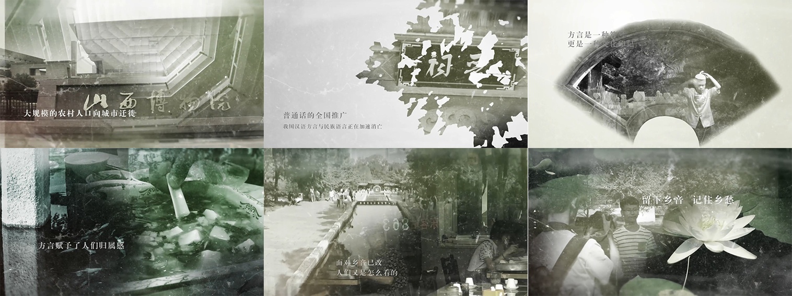
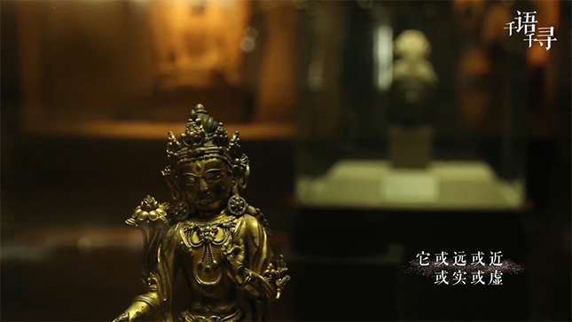
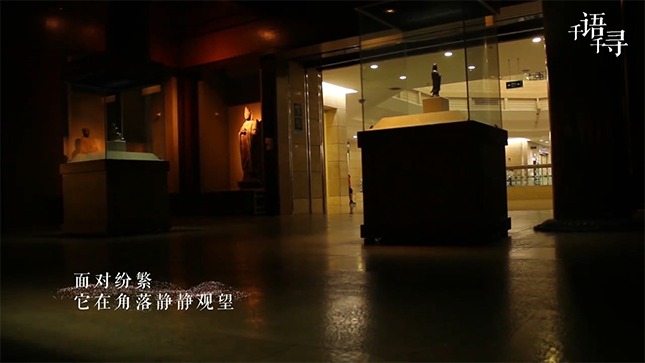

由于经济发展与城镇化的速度不断加快，大规模的农村人口向城市迁徙，普通话的全国推广，我国汉语方言与民族语言正在加速消亡。
任何一种语言都不单单是文字和语音的问题，而是包含了各个民族独特的历史、传统、文化，寄托着居民的浓浓的故乡情结。无论是几亿人能讲的语言，还是只有几千人听得懂的语言，都是人类精神文明的载体。任何一种语言、方言或民族语言的消亡对于语言科学的发展和研究，都是一种损失。
自2015年起，教育部、国家语委正式启动了中国语言资源保护工程，为贯彻党的十八大和十七届六中全会关于大力推广和规范使用国家通用语言文字，科学保护各民族语言文字的精神，深刻认识语言及方言保护的重要性，并且提升学生对语言及方言保护的责任感。


后期编辑
以采访问题作为剪辑依据，将同一问题的多个答案剪辑在一起。片头片尾将多处空镜组合在一起，渲染氛围，深化主题。使用Premiere及相关插件对原片进行调色；使用Audition对前期录音进行降噪和人声增强等音频处理；配合After Effects软件制作双重曝光、粒子效果等特效。
以采访问题作为剪辑依据，将同一问题的多个答案剪辑在一起。片头片尾将多处空镜组合在一起，渲染氛围，深化主题。使用Premiere及相关插件对原片进行调色；使用Audition对前期录音进行降噪和人声增强等音频处理；配合After Effects软件制作双重曝光、粒子效果等特效。